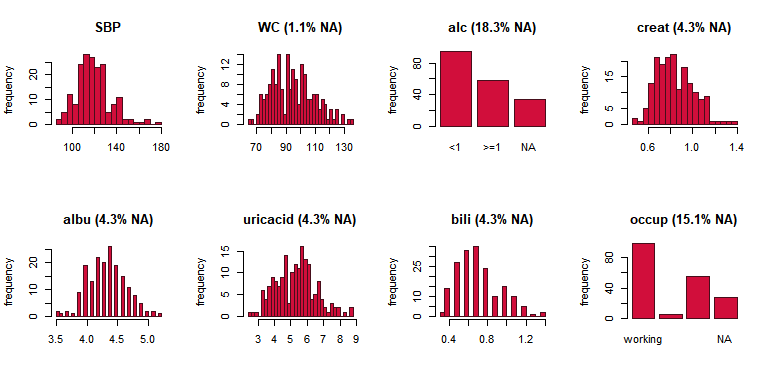
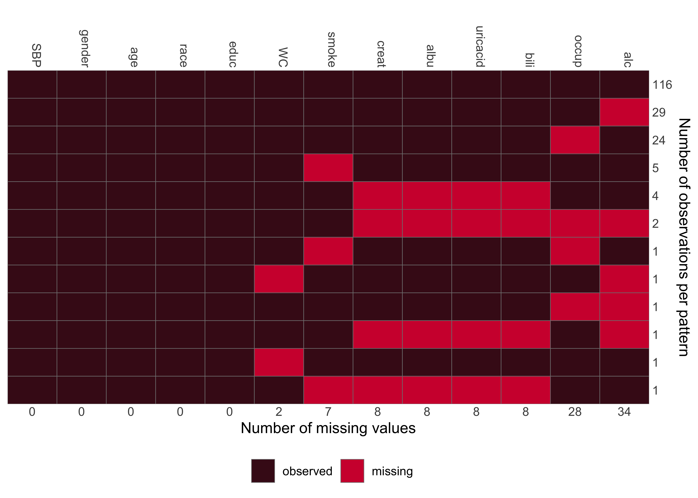

The package JointAI provides functionality to perform joint analysis and imputation of a range of model types in the Bayesian framework. Implemented are (generalized) linear regression models and extensions thereof, models for (un-/ordered) categorical data, as well as multi-level (mixed) versions of these model types.
Moreover, survival models and joint models for longitudinal and survival data are available. It is also possible to fit multiple models of mixed types simultaneously. Missing values in (if present) will be imputed automatically.
JointAI performs some preprocessing of the data and creates a JAGS model, which will then automatically be passed to JAGS with the help of the R package rjags.
Besides the main modelling functions, JointAI also provides a number of functions to summarize and visualize results and incomplete data.
Installation
JointAI can be installed from CRAN:
install.packages('JointAI')Alternatively, you can install JointAI from GitHub:
# install.packages("remotes")
remotes::install_github("NErler/JointAI")Main functions
JointAI provides the following main functions:
lm_imp() # linear regression
glm_imp() # generalized linear regression
clm_imp() # cumulative logit model
mlogit_imp() # multinomial logit model
lognorm_imp() # log-normal regression
betareg_imp() # beta regression
lme_imp() / lmer_imp() # linear mixed model
glme_imp() / glmer_imp() # generalized linear mixed model
clmm_imp() # cumulative logit mixed model
mlogitmm_imp() # multinomial logit model
lognormmm_imp() # log-normal regression
betamm_imp() # beta regression
survreg_imp() # parametric (Weibull) survival model
coxph_imp() # proportional hazards survival model
JM_imp() # joint model for longitudinal and survival dataThe functions use specification similar to that of well known standard functions like lm() and glm() from base R, nlme::lme() (from the package nlme) , lme4::lmer() or lme4::glmer() (from the package lme4) and survival::survreg() and survival::coxph() (from the package survival).
Functions summary(), coef(), traceplot() and densplot() provide a summary of the posterior distribution and its visualization.
GR_crit() and MC_error() implement the Gelman-Rubin diagnostic for convergence and the Monte Carlo error of the MCMC sample, respectively.
JointAI also provides functions for exploration of the distribution of the data and missing values, export of imputed values and prediction.
Minimal Example
Visualize the observed data and missing data pattern
library(JointAI)
plot_all(
NHANES[c(1, 5:6, 8:12)],
fill = '#D10E3B',
border = '#460E1B',
ncol = 4,
breaks = 30
)
md_pattern(NHANES, color = c('#460E1B', '#D10E3B'))
Fit a linear regression model with incomplete covariates
lm1 <- lm_imp(
SBP ~ gender + age + WC + alc + educ + bili,
data = NHANES,
n.iter = 500,
progress.bar = 'none',
seed = 2020
)Summarize the Result
summary(lm1)
#>
#> Bayesian linear model fitted with JointAI
#>
#> Call:
#> lm_imp(formula = SBP ~ gender + age + WC + alc + educ + bili,
#> data = NHANES, n.iter = 500, seed = 2020, progress.bar = "none")
#>
#>
#> Posterior summary:
#> Mean SD 2.5% 97.5% tail-prob. GR-crit MCE/SD
#> (Intercept) 87.662 8.6088 70.3830 104.899 0.00000 1.00 0.0271
#> genderfemale -3.487 2.2407 -7.9563 0.818 0.10533 1.01 0.0258
#> age 0.334 0.0683 0.1986 0.468 0.00000 1.01 0.0258
#> WC 0.230 0.0721 0.0876 0.376 0.00133 1.00 0.0258
#> alc>=1 6.419 2.3862 1.6656 11.112 0.00667 1.03 0.0358
#> educhigh -2.805 2.0681 -6.9371 1.339 0.17067 1.00 0.0258
#> bili -5.277 4.7332 -14.7727 3.596 0.25333 1.01 0.0275
#>
#> Posterior summary of residual std. deviation:
#> Mean SD 2.5% 97.5% GR-crit MCE/SD
#> sigma_SBP 13.5 0.725 12.2 15 1.01 0.0258
#>
#>
#> MCMC settings:
#> Iterations = 101:600
#> Sample size per chain = 500
#> Thinning interval = 1
#> Number of chains = 3
#>
#> Number of observations: 186
coef(lm1)
#> $SBP
#> (Intercept) genderfemale age WC alc>=1 educhigh
#> 87.6622381 -3.4873104 0.3335133 0.2302755 6.4194926 -2.8054874
#> bili sigma_SBP
#> -5.2768560 13.5278177
confint(lm1)
#> $SBP
#> 2.5% 97.5%
#> (Intercept) 70.38301720 104.8986161
#> genderfemale -7.95631510 0.8182921
#> age 0.19857014 0.4678630
#> WC 0.08761699 0.3756334
#> alc>=1 1.66562640 11.1121370
#> educhigh -6.93714769 1.3389344
#> bili -14.77269911 3.5955383
#> sigma_SBP 12.16165429 15.0367180